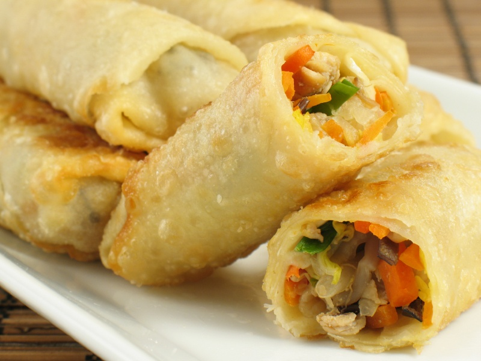

<!--create new ion view and content to hold template-->
<ion-view>
<ion-content class="foodpage">

 <br/>
 <br/><!--line breaks-->

 <!--header bar-->
 <div class="bar bar-header bar-stable">
  <h1 class="title"><b>Spring Roll</b></h1>
 </div>

<!--new div to hold image of food-->
  <div>
  
 </div>

<!--new div which holds the ingredients and has its own class for css styling--> 
  <div class="foodcontent">
  <pre><!--preformatted text tag-->
 <b> Ingredients</b>
1 tablespoon toasted sesame oil
2 teaspoons ginger - fresh minced
170 grams pork - ground ground chicken or turkey is fine
1 small onion shredded
125 grams carrot (~1 large carrot) shredded
70 grams celery (~ 1 rib) shredded
70 grams fresh shiitake mushrooms (2-3 large ones)
280 grams napa cabbage shredded
70 grams glass noodles rehydrated and chopped
2 tablespoons oyster sauce
2 tablespoons Shaoxing or dry sherry works too          <!--ingredients-->
2 teaspoons potato starch halve if using cornstarch
2 teaspoons soy sauce
1/2 teaspoon white pepper - ground
1/4 teaspoon salt
15 sheets spring roll wrappers
3 tablespoons water
3 tablespoons flour
 vegetable oil for deep-frying
6 tablespoons water
1/4 cup rice vinegar
3 tablespoons sugar - granulated
2 tablespoons ketchup
2 teaspoons potato starch halve if using cornstarch
1/4 teaspoon salt
  </pre>
 </div>
 
  <!--new button with styling that links back to the home page-->
 <div>
  <button class="button button-royal" ui-sref="tabs.home"><!--ui-sref link-->
    Back to home<!--text for inside of button-->
  </button>
 </div>

  <!--Form controlled with radio buttons containing different calory sizes for portions, using controller-->
 <div class="list"><!--create a new list-->

  <label class="item item-radio"><!--new radio button with ng-model-->
    <input type="radio" name="group" ng-model="portion.size" value="110">
    <div class="item-content">
      Small Portion<!--text inside the button-->
    </div>
    <i class="radio-icon ion-checkmark"></i>
  </label>

  <!--second radio button-->
  <label class="item item-radio">
    <input type="radio" name="group" ng-model="portion.size" value="165">
    <div class="item-content">
      Medium Portion
    </div>
    <i class="radio-icon ion-checkmark"></i>
  </label>

<!--value displays the outputted value when clicked-->
   <label class="item item-radio">
    <input type="radio" name="group" ng-model="portion.size" value="345">
    <div class="item-content">
      Large Portion
    </div>
    <i class="radio-icon ion-checkmark"></i>
   <b><tt>CALORIES: {{portion.size | json }}</tt></b><br/><!--output with controller-->
  </label><!--last radio button closing-->

 </div><!--closing tag for list div-->
</ion-content>
</ion-view><!--close ion view and content tags-->
